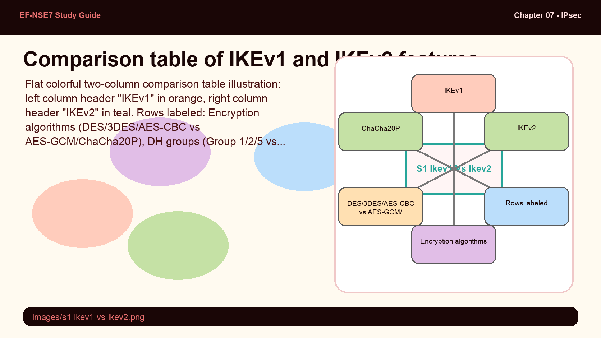
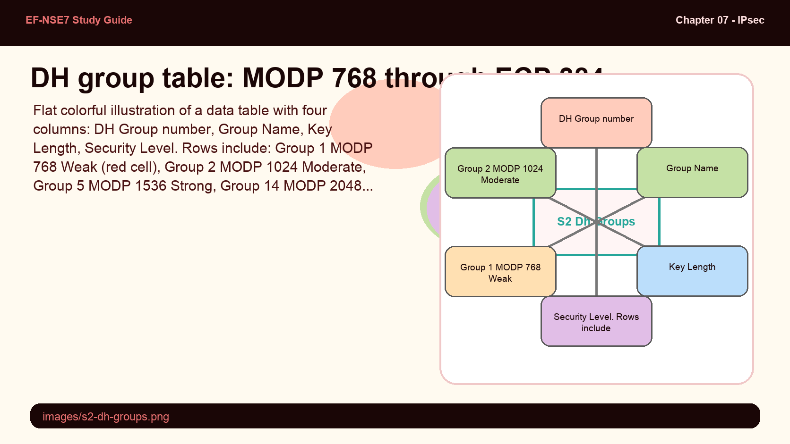
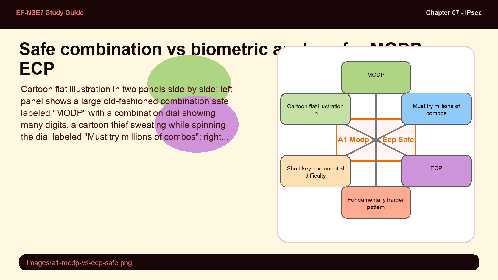
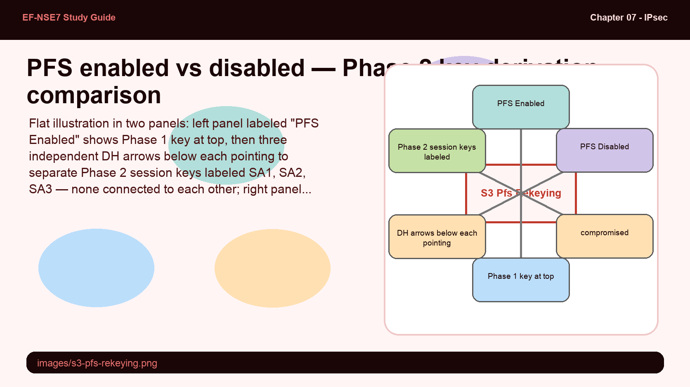

Understand how IKEv1 and IKEv2 differ in security and efficiency, choose the right DH group, configure Perfect Forward Secrecy, and select cipher suites for Phase 1 and Phase 2 SAs.
IKEv2 is not just "better IKE" — it's a fundamentally more efficient protocol that collapses the handshake and eliminates legacy baggage.
This subtopic covers the IKE negotiation mechanics that every exam question about tunnel establishment, algorithm selection, and PFS will test.
💭THINK FIRST · IKEV1 VS IKEV2
IKEv1 and IKEv2 both negotiate Security Associations, but they do it very differently. IKEv1 uses separate "Main Mode" and "Aggressive Mode" exchanges with 6-9 messages. IKEv2 replaces that entire negotiation with 4 messages — and folds the child SA negotiation in at the same time.
IKEv2 supports EAP for authentication while IKEv1 does not. What operational advantage does EAP give in enterprise deployments where remote users connect to a FortiGate gateway?
The study guide recommends migrating from IKEv1 to IKEv2 if all devices support it. Under what circumstance would you NOT migrate, even if all devices technically support IKEv2?
Q1 — MODEL ANSWER
EAP lets IKEv2 integrate with external authentication services — RADIUS, LDAP, FortiAuthenticator — without requiring certificate deployment to every remote user. This is critical for large-scale remote access VPN where distributing client certificates is operationally expensive. EAP allows username/password or token-based auth within the secure IKE exchange.
Q2 — MODEL ANSWER
You would not migrate if the conversion would impact network operability — for example, if a third-party device (non-Fortinet) has a buggy IKEv2 implementation, or if the migration window cannot be coordinated simultaneously on both ends. A partial migration (one side IKEv1, the other IKEv2) is not possible since the protocol version must match on both peers.
SECTION 01
IKEv1 vs IKEv2 — Security Features Compared

📷 images/s1-ikev1-vs-ikev2.png
Side-by-side feature comparison: IKEv1 vs IKEv2 encryption, DH groups, authentication, and integrity.
Flat colorful two-column comparison table illustration: left column header "IKEv1" in orange, right column header "IKEv2" in teal. Rows labeled: Encryption algorithms (DES/3DES/AES-CBC vs AES-GCM/ChaCha20P), DH groups (Group 1/2/5 vs Group 14/15/16/19/20), Authentication (PSK/Digital Sigs vs EAP/PSK/Digital Sigs), Integrity (HMAC-MD5/SHA1 vs HMAC-SHA2/AES-XCBC), Mode Config (checkmark both). Each row has a small icon. Pastel palette, bold outlines, educational infographic feel.
When selecting an IKE version for IPsec VPN, you must evaluate the algorithm support, performance, and authentication flexibility of each version.
Feature
IKEv1
IKEv2
Encryption
DES, 3DES, AES-CBC
AES-GCM, ChaCha20P
DH Groups
Groups 1, 2, 5 (768–1536-bit)
Groups 14–20 (2048-bit to ECP 384-bit)
Authentication
Pre-shared Key, Digital Signatures
EAP, Pre-shared Key, Digital Signatures
Integrity
HMAC-MD5, HMAC-SHA1
HMAC-SHA2, AES-XCBC
Mode Config
Supported
Supported (integrated into exchange)
Key advantages of IKEv2: AES-GCM provides authenticated encryption (confidentiality + integrity in one operation) reducing overhead. EAP enables integration with external authentication systems for remote-access use cases. AES-XCBC delivers efficient integrity checking. Mode Config is integrated directly into the IKE exchange in IKEv2 — reducing message count and CPU/memory load.
Exam tip: The study guide states that all examples use IKEv2. Fortinet recommends migrating from IKEv1 to IKEv2 if all devices support it and the conversion will not impact network operability. Both sides must run the same version.
🧠
MENTAL NOTE
IKEv2 superiority: AES-GCM (auth+encrypt), EAP support, HMAC-SHA2, Groups 14–20, integrated Mode Config. IKEv1 DH groups top out at Group 5 (1536-bit MODP). Both sides must match IKE version — no cross-version negotiation.
ASK A QUESTION
ADD A NOTE
💭THINK FIRST · DH GROUPS: MODP & ECP
Diffie-Hellman groups determine how two endpoints generate a shared secret without ever transmitting it — the mathematical foundation of key exchange. The choice of group affects both security strength and computational cost. MODP relies on the difficulty of discrete logarithms over large primes; ECP uses elliptic curve geometry to achieve equivalent security with shorter keys.
Why does ECP (Group 19 or 20) offer equivalent security to a much larger MODP group, and why does this matter for performance-constrained devices?
DH groups are used in both Phase 1 and Phase 2 (when PFS is enabled). What would happen if Phase 1 used Group 14 but PFS in Phase 2 used Group 2?
Q1 — MODEL ANSWER
ECP's security comes from the difficulty of the elliptic curve discrete logarithm problem, which requires exponentially more work to break than MODP's prime-based discrete log problem for the same key size. A 256-bit ECP key (Group 19) provides security comparable to a 3072-bit MODP key (Group 15). For constrained devices, shorter keys mean faster computation, less memory, and lower power use — making ECP ideal for branch hardware.
Q2 — MODEL ANSWER
Using a weaker DH group for PFS than for Phase 1 creates a security asymmetry — the PFS keys are only as strong as the weakest group used. An attacker who can break Group 2 (1024-bit MODP, considered weak) can derive all Phase 2 session keys, even though Phase 1 used the stronger Group 14. PFS is only as protective as the group it uses.
SECTION 02
DH Groups — MODP and ECP Key Exchange

📷 images/s2-dh-groups.png
DH groups 1–20: group number, name, key length, and security classification.
Flat colorful illustration of a data table with four columns: DH Group number, Group Name, Key Length, Security Level. Rows include: Group 1 MODP 768 Weak (red cell), Group 2 MODP 1024 Moderate, Group 5 MODP 1536 Strong, Group 14 MODP 2048 Very Strong (green), Group 15 MODP 3072, Group 19 ECP 256 Strong Efficient (teal highlight), Group 20 ECP 384 Very Strong Efficient. An inset box on the left side shows a small elliptic curve diagram vs a prime number grid to illustrate MODP vs ECP. Pastel palette, bold outlines, educational infographic feel.
Diffie-Hellman (DH) groups define the key exchange algorithm used during Phase 1 and Phase 2 (when PFS is enabled). FortiGate supports two underlying mathematical approaches:
MODP (Modular Exponential): Uses large prime numbers. Security relies on the discrete logarithm problem in modular arithmetic. As prime size increases, security increases — but so does computational cost. Groups 1, 2, 5, 14, 15, 16, 17, 18.
ECP (Elliptic Curve): Uses elliptic curve mathematics. Equivalent security with shorter keys — dramatically lower computational demand. Groups 19 (256-bit) and 20 (384-bit).
DH Group
Name
Key Length
Security
1
MODP 768
768-bit
Weak — avoid
2
MODP 1024
1024-bit
Moderate
5
MODP 1536
1536-bit
Strong
14
MODP 2048
2048-bit
Very Strong
15
MODP 3072
3072-bit
Stronger
19
ECP 256
256-bit
Strong, Efficient
20
ECP 384
384-bit
Very Strong, Efficient
Exam warning: Groups 1, 2, and 5 are considered legacy/weak. IKEv2 supports Groups 14–20. Never use Group 1 (768-bit) in production — it is cryptographically broken.
🧠
MENTAL NOTE
MODP = large primes, scales with key size. ECP = elliptic curves, equivalent security with shorter keys. Group 14 (MODP 2048) = minimum recommended. Groups 19/20 (ECP) = best performance/security ratio. IKEv1 max = Group 5. IKEv2 supports up to Group 20.
Analogy
MODP vs ECP is like cracking a safe with a combination lock vs a biometric scanner — one requires brute-forcing more and more digits, the other uses a fundamentally harder puzzle in a much smaller space.
MODP group size (768→4096-bit) — the number of combination digits on the safe; adding digits makes it linearly harder to guess
ECP 256-bit — a biometric pattern where guessing even a fraction of the geometry is exponentially harder, despite the "small" 256-bit size
Attacker's computational cost — the time needed to crack MODP 2048 vs ECP 256 is comparable, but ECP uses far less energy to operate

📷 images/a1-modp-vs-ecp-safe.png — add this image to the folder
Cartoon flat illustration in two panels side by side: left panel shows a large old-fashioned combination safe labeled "MODP" with a combination dial showing many digits, a cartoon thief sweating while spinning the dial labeled "Must try millions of combos"; right panel shows a sleek modern biometric scanner labeled "ECP" with a fingerprint glyph, the same cartoon thief looking confused labeled "Fundamentally harder pattern". Below each panel: MODP label "Big key needed, linear difficulty growth" vs ECP label "Short key, exponential difficulty". Pastel orange and teal palette, bold outlines, no shadows, educational infographic feel.
ASK A QUESTION
ADD A NOTE
💭THINK FIRST · PERFECT FORWARD SECRECY
Perfect Forward Secrecy (PFS) addresses a specific threat: if an attacker records your encrypted traffic today, and later compromises your long-term key, can they decrypt it? Without PFS, the answer is yes. PFS uses independent DH key exchanges for each Phase 2 SA, so compromising one session key reveals nothing about others.
What is the performance trade-off of enabling PFS in Phase 2, and when might you disable it despite the security benefit?
If PFS is disabled, what simpler key derivation method is used for Phase 2, and what does this mean for long-term traffic confidentiality?
Q1 — MODEL ANSWER
PFS requires a full DH key exchange for every Phase 2 rekey — additional CPU computation compared to deriving Phase 2 keys from the Phase 1 key material. You might disable PFS on high-throughput tunnels where rekey frequency is high and the CPU cost becomes measurable, or on legacy hardware that cannot handle the DH computation at scale without dropping traffic.
Q2 — MODEL ANSWER
Without PFS, Phase 2 keys are derived from the Phase 1 key material using simpler key derivation functions (PRF output). This means all Phase 2 sessions are mathematically linked to Phase 1. If the Phase 1 key is ever compromised — even retroactively — all past and future Phase 2 traffic encrypted under keys derived from it is at risk of decryption.
SECTION 03
Perfect Forward Secrecy and Phase 2 Rekeying

📷 images/s3-pfs-rekeying.png
With PFS: each Phase 2 session uses an independent DH exchange. Without PFS: all sessions derive from Phase 1 key material.
Flat illustration in two panels: left panel labeled "PFS Enabled" shows Phase 1 key at top, then three independent DH arrows below each pointing to separate Phase 2 session keys labeled SA1, SA2, SA3 — none connected to each other; right panel labeled "PFS Disabled" shows Phase 1 key at top with a single derivation arrow branching into SA1, SA2, SA3 all linked to the same Phase 1 key. A red "compromised" icon over Phase 1 in right panel shows all SAs are at risk. Pastel green (left) and red-orange (right) color coding, bold outlines, educational infographic feel.
Perfect Forward Secrecy (PFS) is a Phase 2 setting that, when enabled, uses a fresh Diffie-Hellman exchange for each new Phase 2 Security Association. This means each session key is mathematically independent from the Phase 1 key material and all other Phase 2 session keys.
When PFS is enabled: a new DH group exchange runs at every Phase 2 rekey interval. Compromising any single session key reveals nothing about past or future sessions. This protects against retroactive decryption of recorded traffic.
When PFS is disabled: Phase 2 keys are derived from Phase 1 key material using simpler key derivation. All Phase 2 sessions are mathematically linked to Phase 1. If Phase 1 is compromised, all associated Phase 2 sessions are at risk.
The DH group selected for PFS is configured in the Phase 2 settings. You should choose a group at least as strong as the Phase 1 DH group — using a weaker PFS group degrades the overall security posture.
Exam warning: PFS is a Phase 2 setting — it is not part of Phase 1 negotiation. Enabling PFS adds DH computation overhead at every Phase 2 rekey. On high-throughput tunnels with short lifetimes, this can impact performance.
🧠
MENTAL NOTE
PFS = Phase 2 setting. Enabled: independent DH per SA rekey — past sessions safe if current compromised. Disabled: Phase 2 keys derived from Phase 1 material — compromise propagates. PFS DH group must be at least as strong as Phase 1 DH group.
ASK A QUESTION
ADD A NOTE
💭THINK FIRST · FORTIMANAGER IPSEC TEMPLATES
FortiManager offers two ways to deploy IPsec VPN at scale: the VPN Manager wizard and IPsec Templates. They are not equivalent. VPN Manager is an assisted, community-and-node approach; IPsec Templates are Device Manager provisioning templates that support dynamic metadata variables and enable zero-touch provisioning (ZTP).
IPsec templates support "dynamic configurations" via metadata variables, but VPN Manager does not. What operational problem does this solve in a large hub-and-spoke deployment?
When you assign an IPsec template to a device in FortiManager, the device status immediately shows "Modified" — why is this expected, and what must you do next?
Q1 — MODEL ANSWER
In a hub-and-spoke deployment, each spoke needs unique values for remote gateway IP, local ID, and remote subnet. Metadata variables let a single IPsec template define these as variables that are resolved per-device during provisioning — so you don't need a separate template for every spoke. VPN Manager requires identical configuration across all community nodes, making it unsuitable for sites with unique addressing.
Q2 — MODEL ANSWER
Template assignment is a FortiManager-side operation that marks the device database as modified — it does not push configuration to the FortiGate. The "Modified" status with an orange warning is expected because the template has not yet been installed. You must install device settings and then push the policy package to actually deploy the IPsec configuration to the firewall.
Flat colorful illustration showing a 4-step numbered workflow from left to right: Step 1 labeled "Create & Assign Template" shows a template icon inside a Device Layer box; Step 2 labeled "Install Device Settings" shows a CLI Template box with arrow to FortiGate icon; Step 3 labeled "Create Zone" shows an ADOM box with zone interface; Step 4 labeled "Push Policy Package" shows a Policy Layer box with document icon. Arrows connect each step left to right. Hub and Spoke labels on top. Pastel teal, blue and orange palette, bold outlines, educational infographic feel.
FortiManager IPsec templates live under Device Manager > Provisioning Templates > IPsec Tunnel. Unlike VPN Manager (which uses communities and nodes), IPsec templates configure Phase 1 and Phase 2 parameters directly and support metadata variables for per-device dynamic values (remote gateway, local ID, remote subnet, tunnel interface IP).
The 4-step installation workflow:
Create and assign IPsec templates to hub and spoke device groups.
Install device settings to push IPsec VPN interfaces to FortiGates (device layer only).
Create a zone interface in the hub's device database and associate normalized interfaces for use in the policy layer.
Create policies and install the policy package.
When a template is assigned, all affected devices show a status of Modified (orange warning). This is expected — template assignment does not install configuration. Ensure device and policy layers are synchronized before assigning templates to avoid cascading pending-status conflicts.
Feature
VPN Manager
IPsec Templates
Central management
Centralized interface for VPNs
Applied from Device Manager
VPN creation
Assisted (wizard)
Manual and Assisted
Dynamic configurations
Not supported
Metadata variables
Import existing config
Not possible
Supported
Editable IPsec names
Not supported
Supported
Recommended for
Large-scale, complex
Preprovisioning and ZTP
Note: IPsec templates must be assigned to firewalls managed within the same FortiManager ADOM. VPN Manager can include non-managed gateways (third-party devices); IPsec templates cannot.
🧠
MENTAL NOTE
IPsec Templates: Device Manager location, metadata variables, supports import and editable names, ideal for ZTP. VPN Manager: wizard-based, no dynamic vars, no import, supports non-managed GWs. Template assignment → Modified status → must install separately. Sync device/policy layers BEFORE assigning templates.